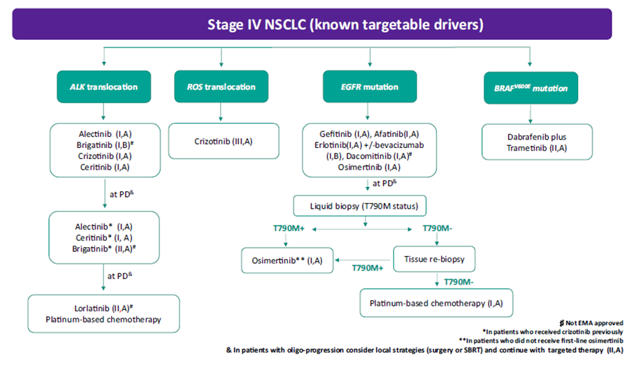

MÓDULO 5 : Tratamiento de la enfermedad avanzada en segunda línea

5.8 Conclusiones
A continuación se muestra el algoritmo dela guía SEOM 2018 de tratamiento de CNMP avanzado en segunda línea y sucesivas:

Casi la mitad de los pacientes con cáncer de pulmón no microcítico (CPNM) se diagnostica en enfermedad avanzada o metastásica sin opciones de tratamiento potencialmente curativo y con pronóstico desfavorable. Muchos de ellos serán candidatos a recibir una segunda o incluso tercera línea de tratamiento.
La inmunoterapia con agentes inhibidores de PD-1/PD-L1 ha supuesto un gran avance en el manejo del CNMP localmente avanzado o metastásico en segunda línea y actualmente constituye el tratamiento de elección de segunda línea para una gran proporción de los pacientes con CNMP avanzado que han progresado a una primera línea de QT. Nivolumab, pembrolizumab y atezolizumab han demostrado en diversos estudios fase III superioridad en SG frente al tratamiento de quimioterapia de segunda línea, siendo su indicación independiente de la histología tumoral.
En aquellos pacientes no candidatos a inmunoterapia, las alternativas de quimioterapia de segunda línea son: docetaxel y pemetrexed. En este caso, la histología sí tiene un papel importante a la hora de decidir el fármaco a emplear. Pemetrexed sólo está aprobado en histología no escamosa y otra opción disponible en pacientes con esta histología es la combinación de docetaxel y nintedanib. Erlotinib está indicado cuando otras opciones de tratamiento de quimioterapia no se consideran adecuadas y afatinib está indicado en carcinoma escamoso de pulmón avanzado previamente tratado.
En aquellos pacientes con mutación activadora de EGFR:
• En pacientes tratados previamente con QT podremos emplear erlotinib, gefitinib o afatinib.
• Osimertinib está indicado en pacientes que hayan progresado a un TKI en primera línea y presenten la mutación T790M.
• La QT es el tratamiento disponible en pacientes en progresión a osimertinib o mutación T790M negativa o desconocida.
• En pacientes previamente tratados también se puede plantear tratamiento de inmunoterapia a pesar de la escasa evidencia disponible en este subgrupo de pacientes.
En aquellos pacientes con translocación de ALK:
• En pacientes tratados previamente con QT podremos emplear crizotinib, alectinib o ceritinib.
• Alectinib, ceritinib, y próximamente brigatinib están indicados en pacientes que hayan progresado a crizotinib.
• Lorlatinib, con carácter condicional, está aprobado por la EMA en pacientes que hayan progresado tras el tratamiento con alectinib o ceritinib como primera terapia de inhibición de ALK, o hayan progresado a crizotinib y al menos a un inhibidor más de ALK.
• La QT es la opción de tratamiento disponible en este subgrupo de pacientes tras PGR a distintos inhibidores de ALK.
• En pacientes previamente tratados también se puede plantear tratamiento de inmunoterapia a pesar de la escasa evidencia disponible en este subgrupo de pacientes.